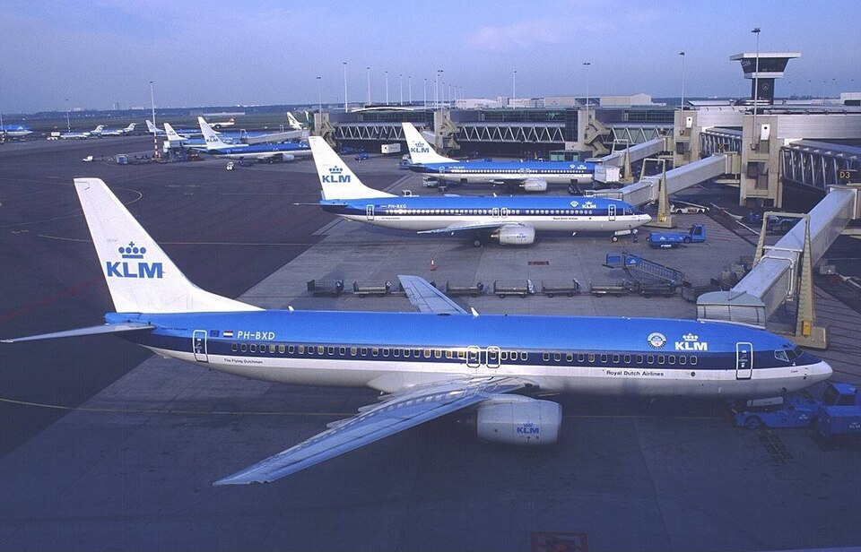
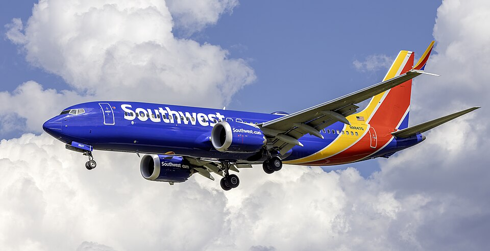
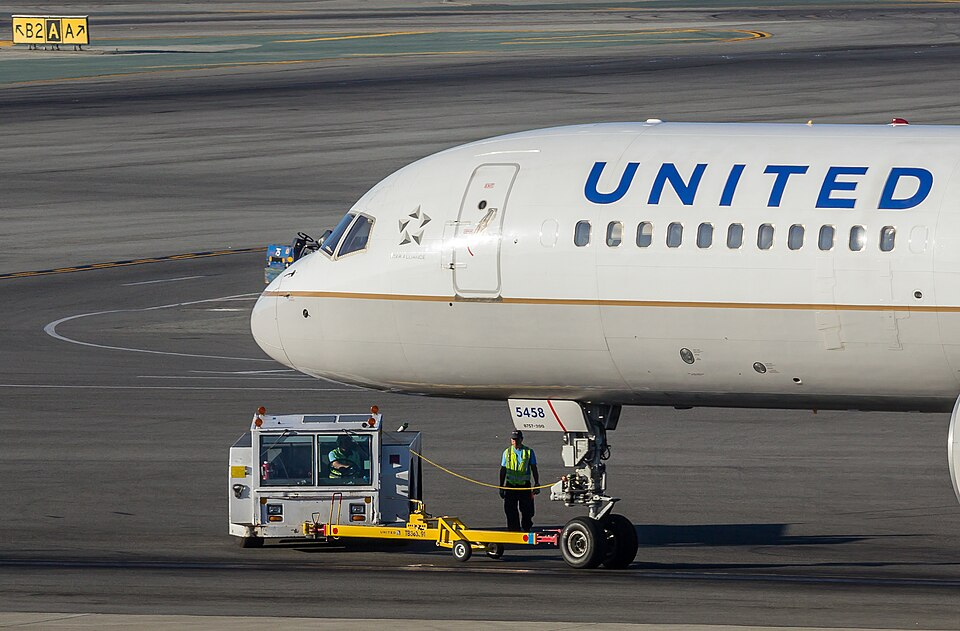
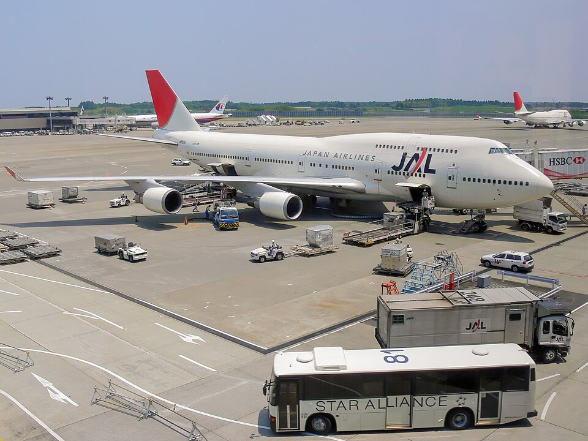
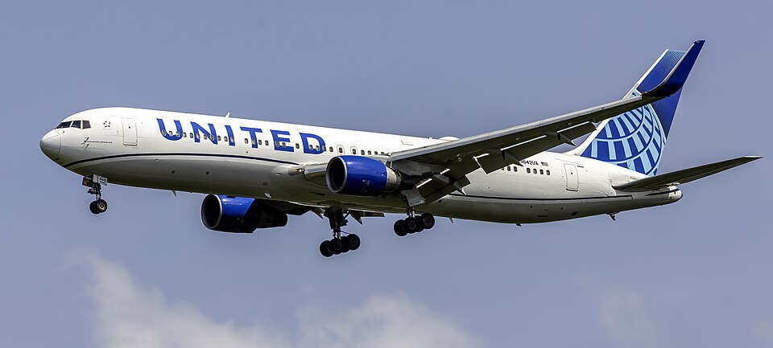
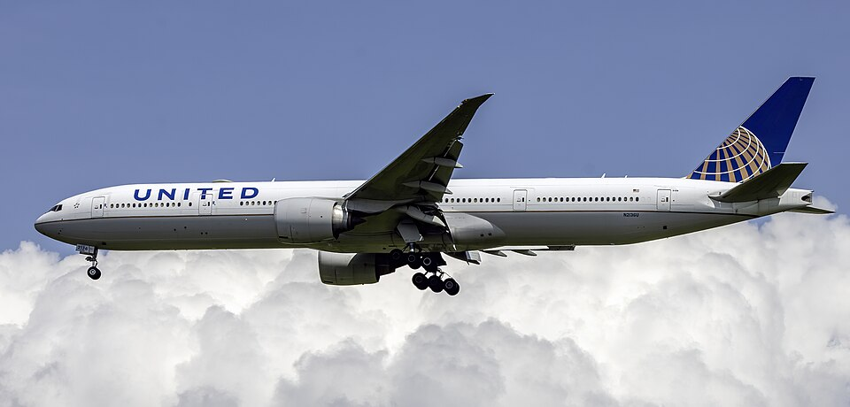
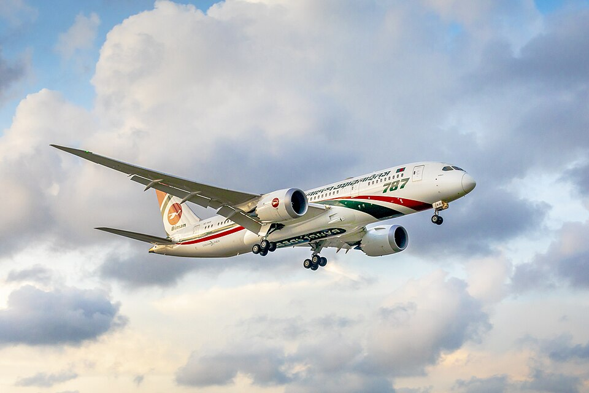
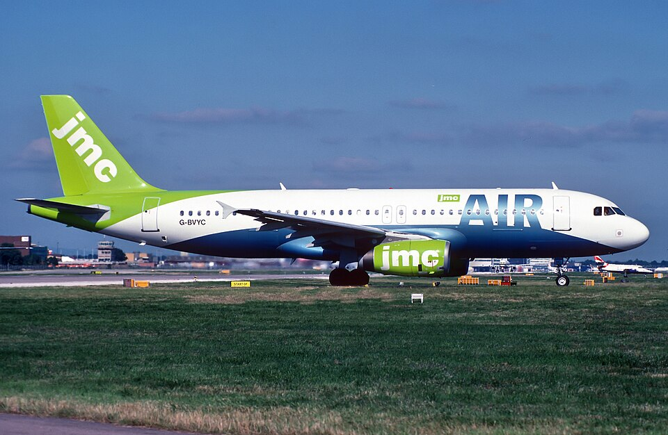
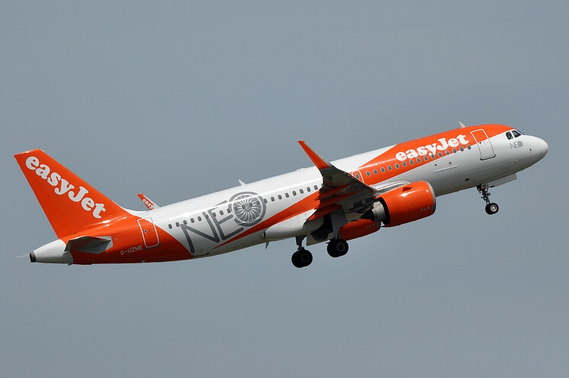
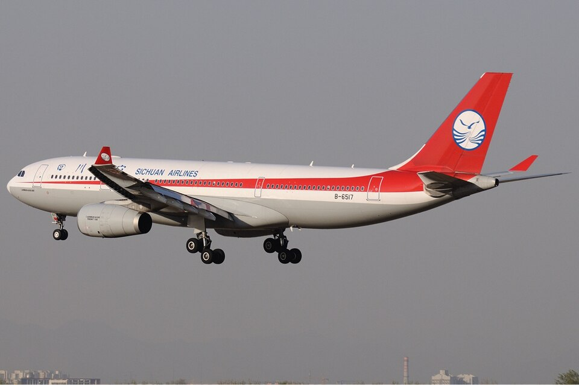
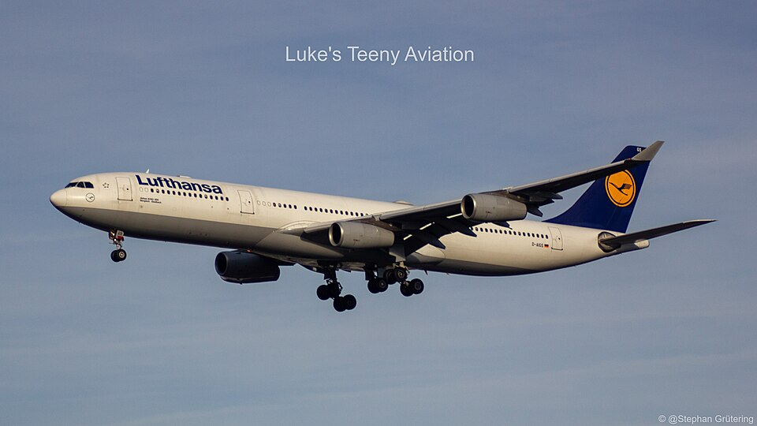
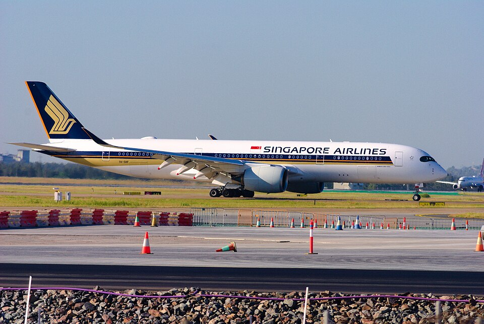
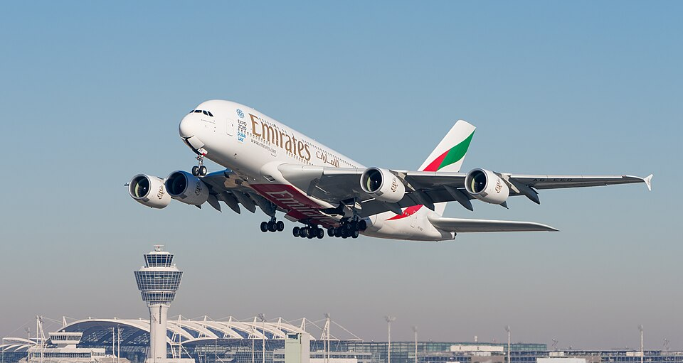
| 引擎型號 | 推力 | 適用機型 | 特色 |
|---|---|---|---|
| CFM56-3 | 89–105 kN | 737 Classic | 扁平下半部引擎外殼 |
| CFM56-5B | 97–147 kN | A318/319/320/321 | A320 家族最常見 |
| CFM56-7B | 87–121 kN | 737 NG | 737-600/700/800/900 標配 |
| CFM56-5C | 138–151 kN | A340-200/300 | 四發布局，每具推力較小 |
| LEAP-1A | 111–147 kN | A320neo 家族 | 新世代省油，比 -5B 節省 15% |
| LEAP-1B | 89–130 kN | 737 MAX | 737 MAX 唯一引擎選項 |
| 引擎型號 | 推力 | 適用機型 | 特色 |
|---|---|---|---|
| RB211-535 | 160–193 kN | 757 | 三軸設計，低壓渦輪獨立 |
| RB211-524 | 222–270 kN | 747767 | 747-400 大量使用 |
| Trent 700 | 300–340 kN | A330 CEO | 三軸設計、低噪音 |
| Trent 500 | 236–249 kN | A340-500/600 | 高推力四發應用 |
| Trent 970 | 311–340 kN | A380 | 世界最大民航引擎之一 |
| Trent 1000 | 240–360 kN | 787 | 鋸齒尾噴嘴（Chevron）降噪 |
| Trent XWB | 330–430 kN | A350（獨家） | 橢圓進氣口、最高效率渦扇 |
| Trent 7000 | ~320 kN | A330neo | 基於 Trent 1000，低油耗 |
| 引擎型號 | 推力 | 適用機型 | 特色 |
|---|---|---|---|
| CF6-80C2 | 233–276 kN | 747767A300A330 | 最廣泛應用的廣體引擎之一 |
| GE90 | 330–513 kN | 777（獨家） | 曾是世界最大推力引擎，直徑 3.43m |
| GEnx-1B | 240–340 kN | 787 | 複合材料風扇葉，鋸齒降噪 |
| GEnx-2B | 296–311 kN | 747-8 | 747-8 四發版本 |
| GE9X | ~470 kN | 777X（獨家） | 複合材料風扇、陶瓷耐熱 |
| GP7200 | ~340 kN | A380（Engine Alliance） | GE + P&W 合資 |
| 引擎型號 | 推力 | 適用機型 | 特色 |
|---|---|---|---|
| PW2000 | 162–185 kN | 757 | 美軍 C-17 也使用同家族 |
| PW4000 | 222–436 kN | 747767777A330 | 應用最廣的高涵道比引擎系列 |
| PW1100G-JM | 111–147 kN | A320neo 家族 | GTF 齒輪式渦扇，風扇與低壓渦輪解耦 |
| IAE V2500 | 97–147 kN | A320 CEO 家族 | 國際航空引擎聯合體（P&W + RR + MTU） |